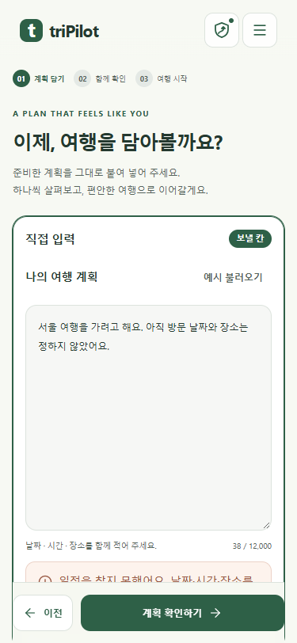

일정 0개면 입력 화면으로 돌아오기
읽기가 끝나 일정이 없다고 확정되면 질문 유지보다 먼저 이전 입력 화면으로 돌아옵니다. 제출 글과 같은 탭의 첨부 파일은 고쳐 다시 보낼 수 있도록 복원합니다.
Chrome 실제 촬영 · mock 서버 화면 반응 확인. 공개 cs 프로젝트 서버 응답·x600 서버 배포 확인은 하지 않았습니다.
375px 자동 복귀 직후
직접 입력한 글이 남아 있는 화면입니다. 입력 칸 아래에 복귀 이유가 표시됩니다.
